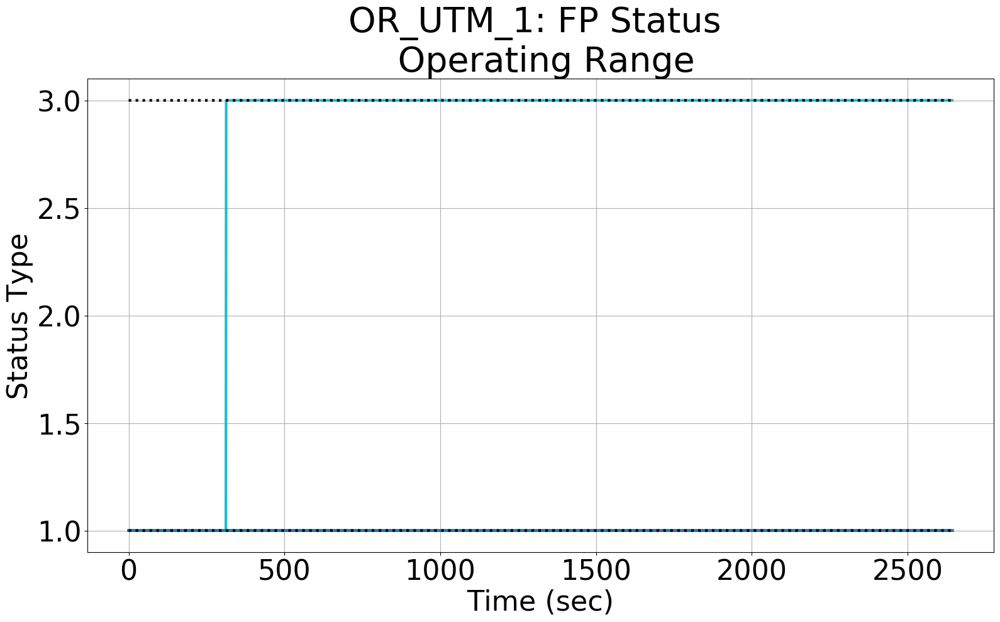
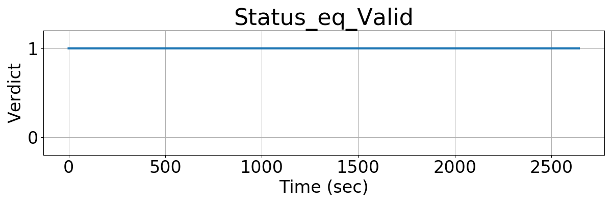
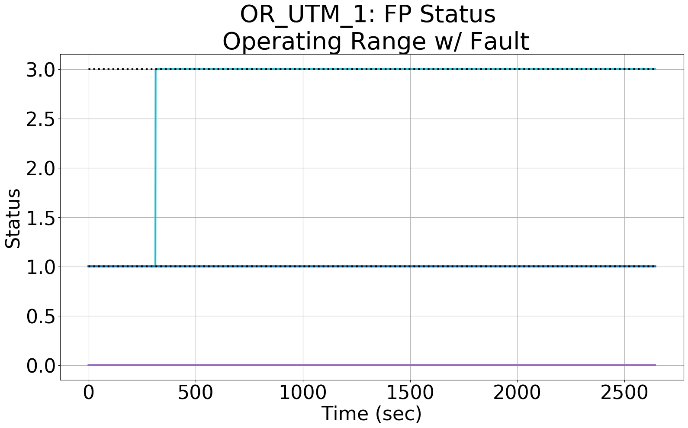
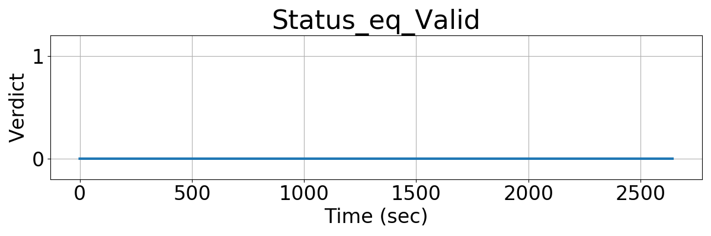

Integrating Runtime Verification into an
Automated UAS Traffic Management System
Matthew Cauwels, Abigail Hammer, Benjamin Hertz, Phillip H. Jones, Kristin Y. Rozier
This webpage contains supplementary specifications for "Integrating Runtime Verification into an
Automated UAS Traffic Management System" by M. Cauwels, A. Hammer, B. Hertz, P. H. Jones, and K. Y. Rozier
OR_UTM_1
Specification Description
The Status of a flight plan will always be either: ACCEPTED (1), REJECTED (2), or REPLACED (3)
Signals Required
Status
Boolean Conversion of Signals to Atomic Inputs
Status_eq_Valid = 1;
for(i = 0; i < NumUAS; i++)
{
// if UAS i's Status, an integer, is 1, 2, or 3
// and the value is not "nan"
if((Status[i] < 0) || (Status[i] > 3) && (Status[i] == Status[i])
{
Status_eq_Valid = 0;
}
}MLTL Specification
Original: Status_eq_Valid
Fault Explanation
Flight plan type is not a predefined string: ACCEPTED, REJECTED, or REPLACED
Additional Notes
Figures



